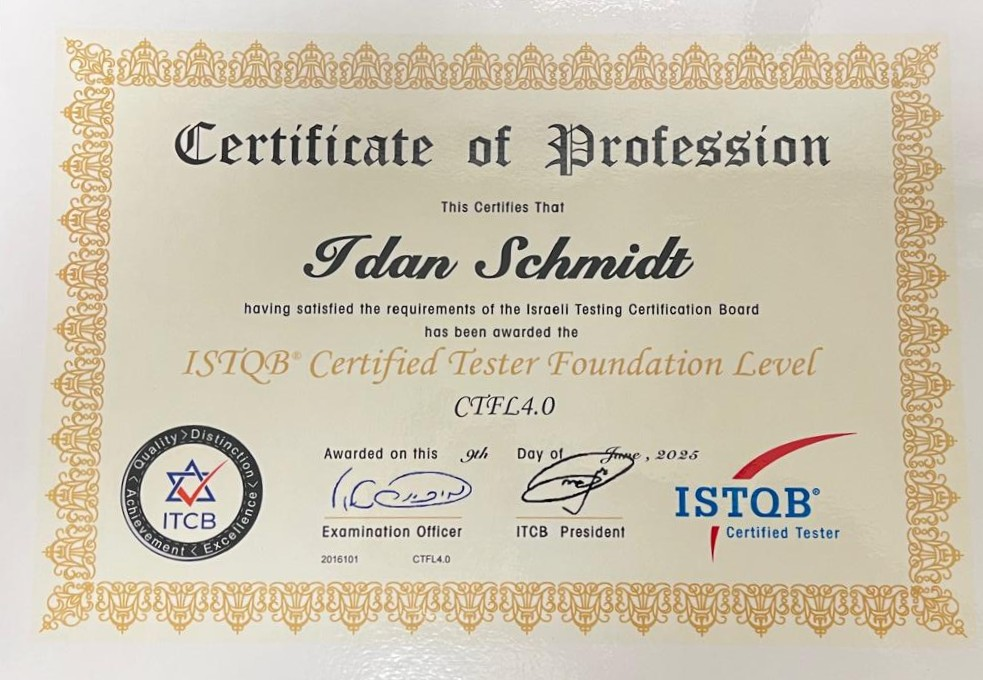

Idan Schmidt – QA Student | Manual Testing | JIRA & HTML Experience
ABOUT ME:
My name is Idan Schmidt, and I'm currently studying to become a professional Software Tester (QA) at John Bryce College.
I'm in the middle of a QA course and already certified with ISTQB Foundation Level.
I'm highly motivated to grow in the tech field, and I'm eager to keep learning and expanding my skills — including automated testing and advanced QA methodologies.
I believe that quality is never an accident – it’s the result of careful testing, curiosity, and constant learning.
That’s what I bring to every project.
Connect with me on LinkedIn
MY SKILLS:
- Manual Testing
- Black Box Testing
- Smoke Testing
- Regression Testing
MY EXPERIENCE:
Junior QA Tester in training, with hands-on experience in manual testing and working with JIRA for bug tracking and task management.
Completed two projects in collaboration with a partner, including writing test cases and test runs based on requirement documents,
executing manual tests using JIRA, creating test plans, and writing test summary reports. Also has basic knowledge of HTML for analyzing user interfaces.
if you looking for something specific:
